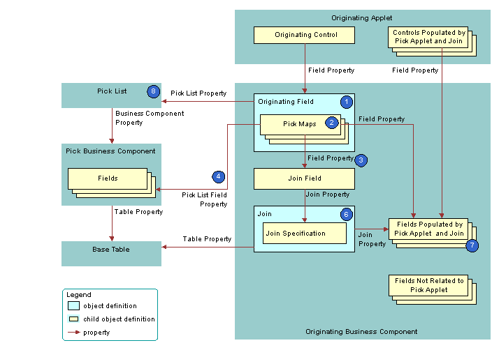

Originating Business Component of a Dynamic List
The originating business component of a dynamic list is the business component that the Business Component property of the originating applet references. This business component supplies the data that Siebel CRM displays in the originating applet.
The following figure describes how Siebel CRM defines the originating business component of a dynamic list. This list is described in Originating Applet of a Dynamic List.
Explanation of Callouts
Siebel CRM uses the following objects in the originating business component of a dynamic list:
Originating field. Provides data to the originating control. The originating field is the parent of the pick map. The Pick List property of the field specifies the pick list. A pick map is a child of an originating field. It supports pick applets on more than one field in the business component.
The originating field must reference a database column. You cannot associate a pick applet or list with a read-only field, including a calculated field.
Pick maps. Creates a relationship between a field in the pick business component and a field in the originating business component. This relationship provides the information that Siebel CRM requires to update the active record of the originating business component with information from the pick business component. One of the pick maps updates the join field. The join updates the business component fields that depend on the join.
It is recommended that you test your pick map after you create it. If the value in the originating field remains the same after you choose a value from the pick applet, then you must check the pick map definition for that field.
Field property. Identifies a field in the originating business component that contains data from a field in the pick business component when Siebel CRM calls the PickRecord method.
Pick List Field property. Identifies a field in the pick business component that provides data for the field in the Field property of the pick map. Siebel CRM does the following:
If the user picks a value from an unbounded list, then it updates the fields in the pick map.
If the user types in a new value, then it does not update fields in the pick map.
If the user types a new value into a field that references an unbounded list, then it does not add the value to the list of values that the user can choose.
You must not define more than one multi-value field in an originating business component that references the same destination field that the pick applet references in the Pick List Field Property. If you do this, then Siebel CRM does not display the arrow for the list and the user cannot use the list. For more information, see About the Multi-Value Field.
Join field. Works as a foreign key in the join that the pick applet references. Typically, the name of the join field includes the Id, such as Account Id or Key Contact Id. Siebel CRM defines it in the Source Field property of the join specification. The join field is one of the fields defined in a pick map. If the user chooses a record from the pick applet, then Siebel CRM updates the join field and all fields that reference the join.
The pick maps initially update fields in the originating business component and the controls or list columns that reference these fields. The join and join specification do not update the contents of the applet until the user navigates away from the view, and then returns to the view.
Join and join specification. Sets up the join between the base table of the originating business component and the base table of the pick business component. Siebel CRM uses this join to update fields in the originating business component that include the name of the join in the Join property of the field.
Fields that get data from the pick applet and join. If Siebel CRM modifies the value in the join field, then it updates fields that include the name of the join in the Join property. If the user chooses a value from the pick applet, then it updates the fields that it defines in the Field property of the pick maps.
A pick map and a join update the same fields, but an update that involves a pick map is immediate. An update that involves a join is somewhat delayed. if the user picks a record, then a pick map can update the display value of a joined field. For example, with the Account Name joined field. A pick map does not physically copy a value to the joined fields. It only writes to the foreign key field. For example, Account Id.
Pick list. The field of the originating control references the pick list. The Business Component property of the pick list references the pick business component.
If you define a pick applet that a multi-value group applet calls, then define the list and the pick maps on the originating field in the originating business component. Do not define the list and the pick maps on fields in the child business component that the multi-value group applet references. For more information, see How Siebel CRM Creates a Multi-Value Group.